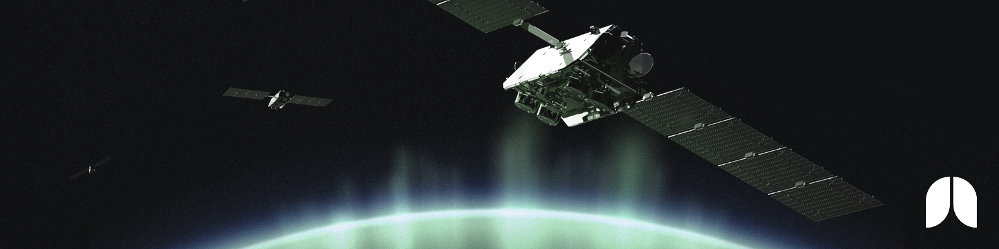
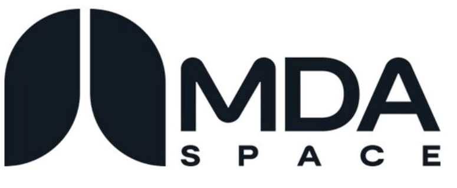
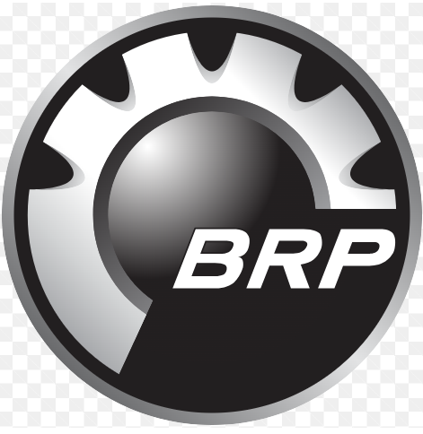
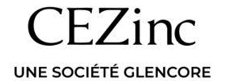

Bachelor of Applied Science in Electrical Engineering
University of Ottawa
Expected graduation: December 2026
CGPA 9.81/10 Equivalent to 3.92/4.0 GPA
Dean's List for academic excellence: 8 consecutive semesters
Electrical Engineering Portfolio
This site presents selected academic and professional projects, including the problems addressed, the tools used and the results achieved.
I have experience with satelitte communication systems, Electrical Ground Support test rack design along with vehicul electrical systems
View My ProjectsUniversity of Ottawa
Expected graduation: December 2026
CGPA 9.81/10 Equivalent to 3.92/4.0 GPA
Dean's List for academic excellence: 8 consecutive semesters
Cegep de l'Outaouais, Gatineau, QC
2020 – 2022
Graduation average: 91%
Awarded a $3,000 Excellence Scholarship
Professional Background


MDASpace, Sainte-Anne-de-Bellevue, Quebec
September 2025 – December 2025

Bombardier Recreational Products (BRP), Valcourt, Québec
January 2025 – April 2025

Canadian Electrolytic Zinc Limited (CEZinc), Salaberry-de-Valleyfield, Quebec
May 2024 – August 2024
Selected engineering projects spanning automation, controls, RF systems, machine learning, and renewable energy.
Machine Learning and Control Systems
Developed an LSTM-based MATLAB and Simulink system that detects speed-sensor failures and keeps a motor operating with a machine-learning replacement signal.
View ProjectDigital Control
Designed the frame, motor integration, and mechanical assemblies for a compact electric scooter prototype.
View ProjectRF Engineering
Designed an impedance-matching network for an RF amplifier using S-parameters, transmission-line models, and Cadence AWR.
View ProjectMedical Devices
Designed an automated syringe filler to reduce downtime and workload in high-throughput vaccination clinics.
View ProjectPower Engineering
Optimized broadband multilayer antireflective coatings with MATLAB modeling, solar-spectrum analysis, and practical material tradeoffs.
View ProjectMobile Applications and Smart Buildings
Developed a landlord and tenant application for targeted building communications, reducing the need to print and distribute thousands of paper notices.
🏆 2nd place in a school competition
View ProjectIn development
New engineering projects and technical work will be added here soon.
A practical engineering toolkit built through design projects, laboratory work, testing, and professional experience.
Analysis, measurement, and troubleshooting for real-world electrical systems.
Applied in: Microwave Matching Network · MDASpace and BRP internships
Software and low-level tools used to model, automate, and control systems.
Applied in: Personnal projects · Academic Projects · MDASpace Internship
Digital tools for turning engineering concepts into testable designs.
Applied in: Academic Projects · MDASpace Internship
Hands-on fabrication, assembly, and workshop experience.
Applied in: BRP Internship · Electric Scooter · Academic Projects
Technical communication and system-level data transfer experience.
Applied in: MDASpace and BRP Internship · Academic Projects
Beyond Engineering
Outside of engineering, I enjoy outdoor running, snowboarding, baseball, and skydiving. These activities have helped me build discipline, teamwork, persistence, and confidence.
Explore Beyond Engineering